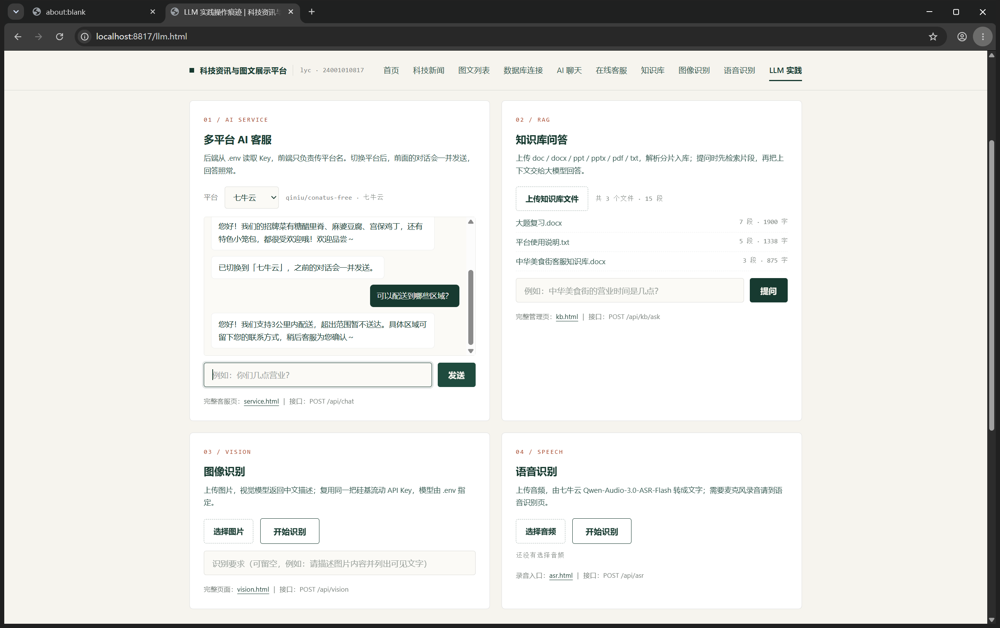
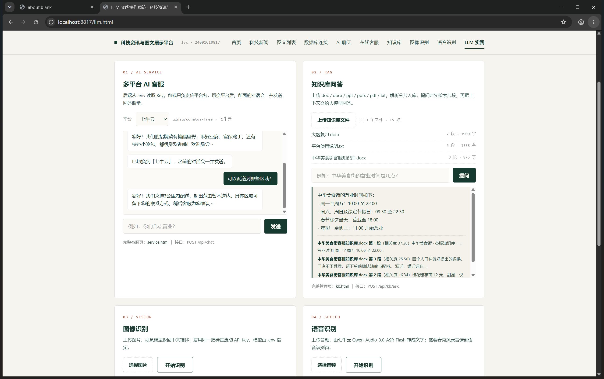
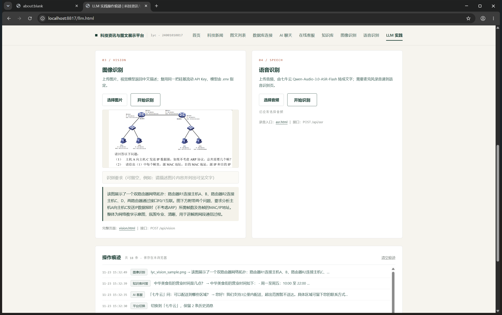
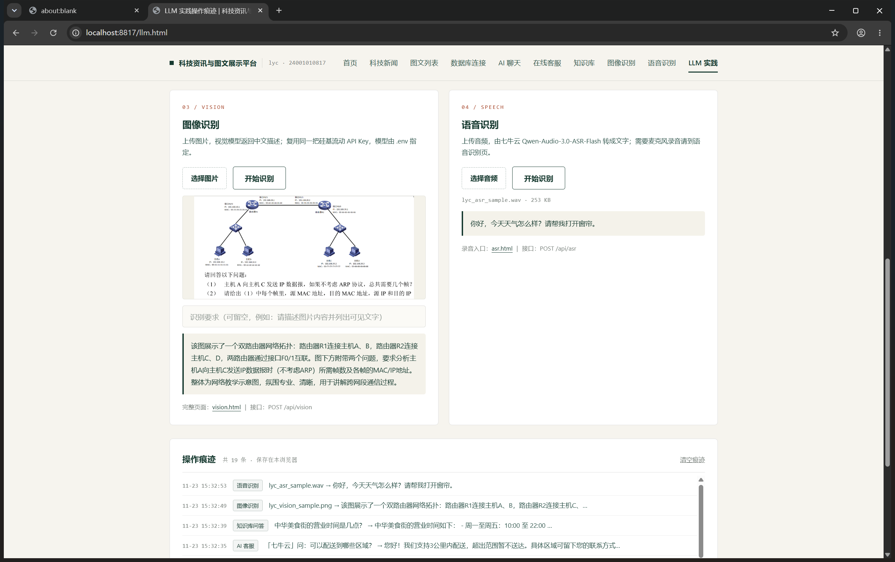
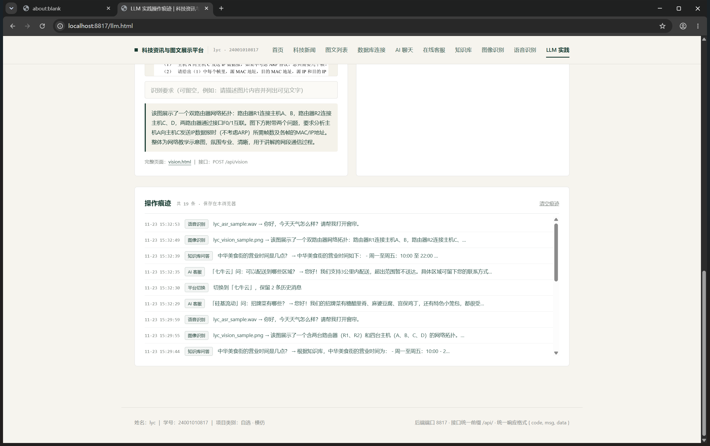

← 返回课堂实践首页
LLM 实践 · 测试截图
2026-11-23 · 截图包含浏览器地址栏 localhost:8817/llm.html（学号后三位 817）
5 张截图均在真实浏览器窗口中截取，地址栏可见 8817 端口；页面由 lyc_project/backend（Express，端口 8817）提供。复现前请先在项目 backend 目录执行 node server.js。

① AI 客服：地址栏可见 localhost:8817/llm.html。先用硅基流动提问，再切到七牛云追问「可以配送到哪些区域？」，历史对话一并发送，两轮都正常回答。

② 知识库问答：地址栏可见 localhost:8817/llm.html。上传课程文档后提问营业时间，检索片段后由大模型作答，并列出引用文件与相关度。

③ 图像识别：地址栏可见 localhost:8817/llm.html。上传网络拓扑截图，视觉模型返回中文描述，识别出两台路由器、四台主机与两道题目。

④ 语音识别：地址栏可见 localhost:8817/llm.html。上传中文音频，七牛云 Qwen-Audio-3.0-ASR-Flash 转写为「你好，今天天气怎么样？请帮我打开窗帘。」

⑤ 操作痕迹：地址栏可见 localhost:8817/llm.html。每完成一次对话、上传或识别，页面自动记录时间、功能与结果，记录保存在浏览器本地。